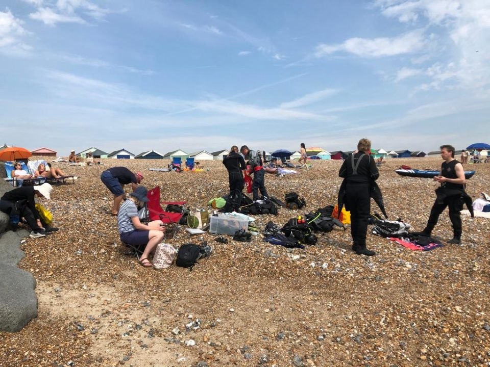
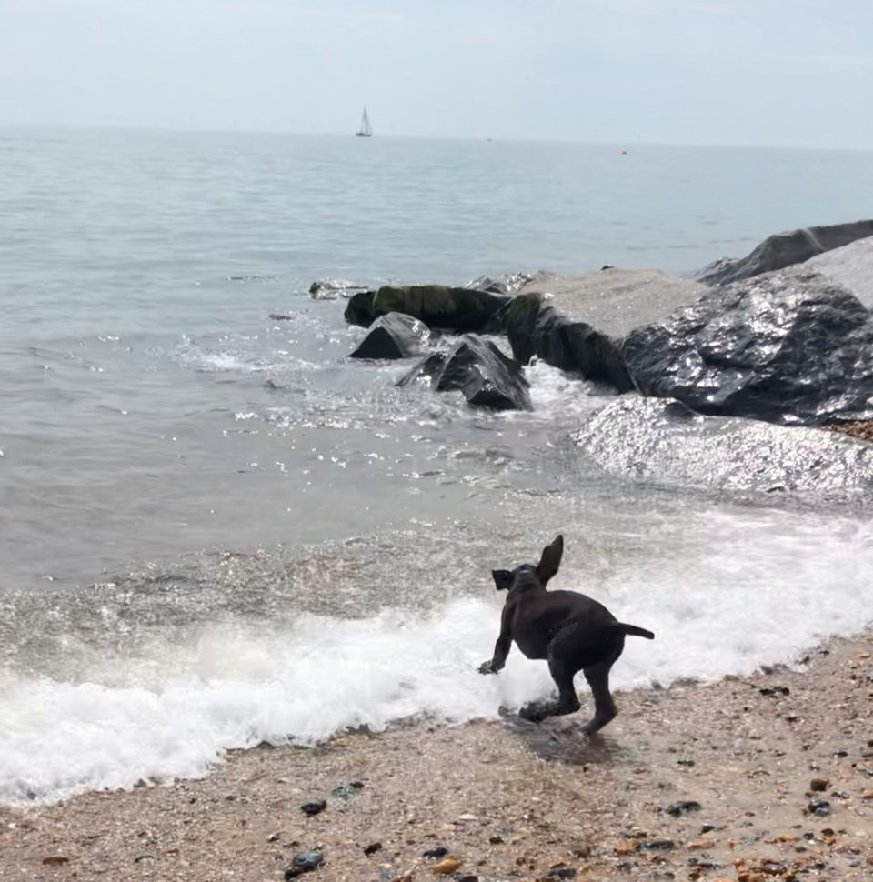

Widewater Beach, Shoreham-by-Sea, August 2020

The 8th August saw our first club dive near Shoreham-by-Sea on Widewater Beach. It was going to be a scorcher with temperatures in the mid-30’s but calm seas, no wind and favourable tides (more on this later).
Six divers fought for parking space (Jess, James, Akiko, Chris, Trevor and Ollie) with four support crew (Sarah – DO, Alex DL training, Emma and Riley – the mascot for the day).
There were several firsts in the dive, Ollies kit, Alex’s training and Riley’s first time on the beach. We set up our stall on the busy beach and got the SEEDS briefing done before the divers inserted themselves into their dry suits. Risks we considered over and above the usual were jet-skis (deploy DSMB’s), fishing lines (take a line cutter) and getting lost (take a compass). Entry was down a shallow shingle beach with the dive being due south until a small ledge was found followed by a swim East until 1/3 air used and then a return. The dive was limited to 60 mins max…what do they say about plans never surviving first contact? It was noted that the yellow buoy should not be reached during the dive.
We tried to get divers in the water ASAP as sitting in a dry suit with temperatures in the 30’s is no fun. Jess and James were efficient as usual and in the water and diving but 12:50. Trevor and Chris got in next and were off 10 mins later with Ollie and Akiko getting in at 13:10.
With the divers out of the way, Sarah then went through planning with me (Alex) whilst Riley (12 weeks old) bravely went to the shore to see if he could eat the sea water.

Sarah and Alex then kept a watchful eye for DSMB’s to be deployed and sure enough after 60 mins one came around the corner of the groyne (the beach version) as James and Jess returned bang on time (a prize is on its way). Shortly after, Ollie arrived without kit from the path at the top of the beach. He and Akiko had drifted four groynes down so now had to bring their kit back. Finally, we saw the last DSMB deployed but way out past the yellow buoy. Binoculars suggested that this might be the Trevor/ Chris pair but this wasn’t certain. They did seem to have found a couple of paddle borders who stuck with them as the drifted further West. At about 14:40, Ollie, who had been dispatched to find the lost boys, found the errant divers way down the beach.
Everyone had a good time including divers, shore cover and of course the day’s mascot. Viz was about 5m and a variety of flora and fauna spotted including baby cuttlefish and long straight seaweed. It was a good shake out for equipment with also a couple of lessons for the dive brief. First, even a 0.1 knot current will push you the best part of 200m down a beach over an hour (a considerable distance with full dive kit on) and second if you cannot find an objective ensure that there is a plan in place.
By Alex
*Photos&Video: 'Riley' by Alex, 'D**ivers' by Sarah A, V**ideo by Trevor*